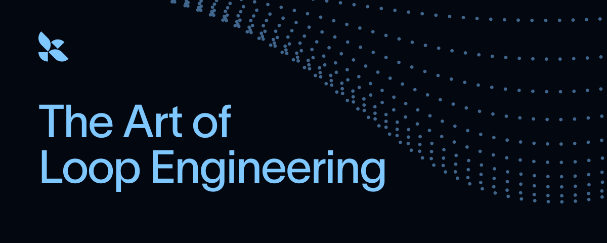
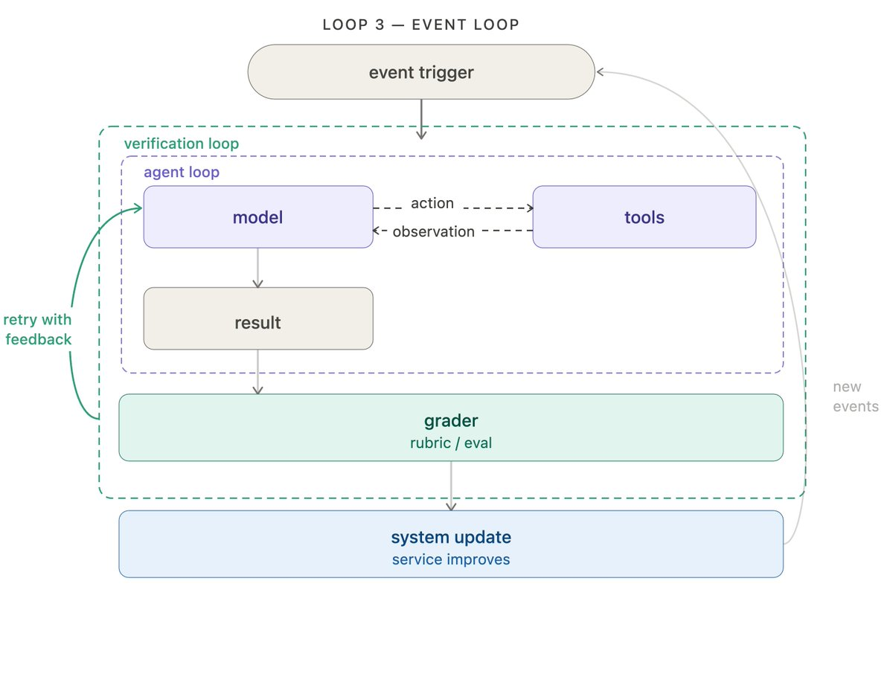
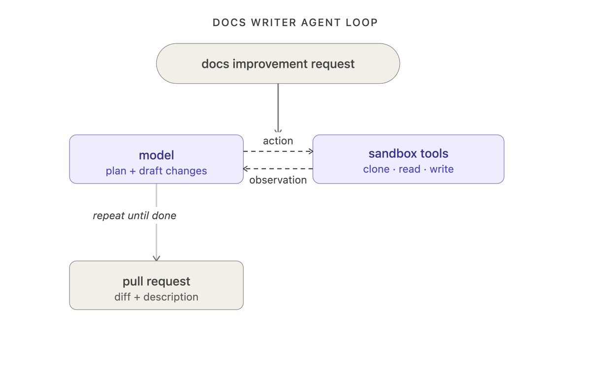
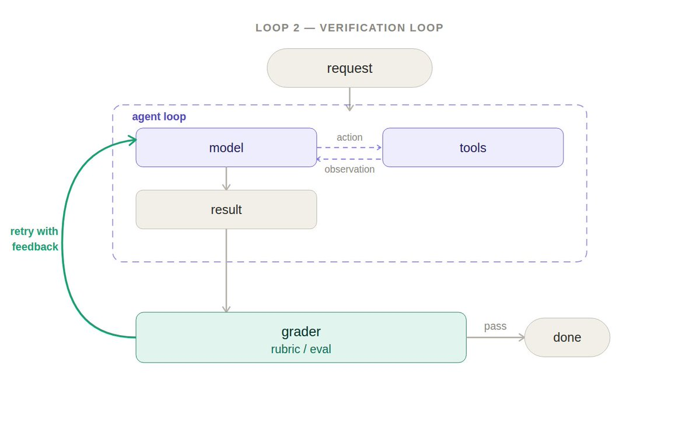
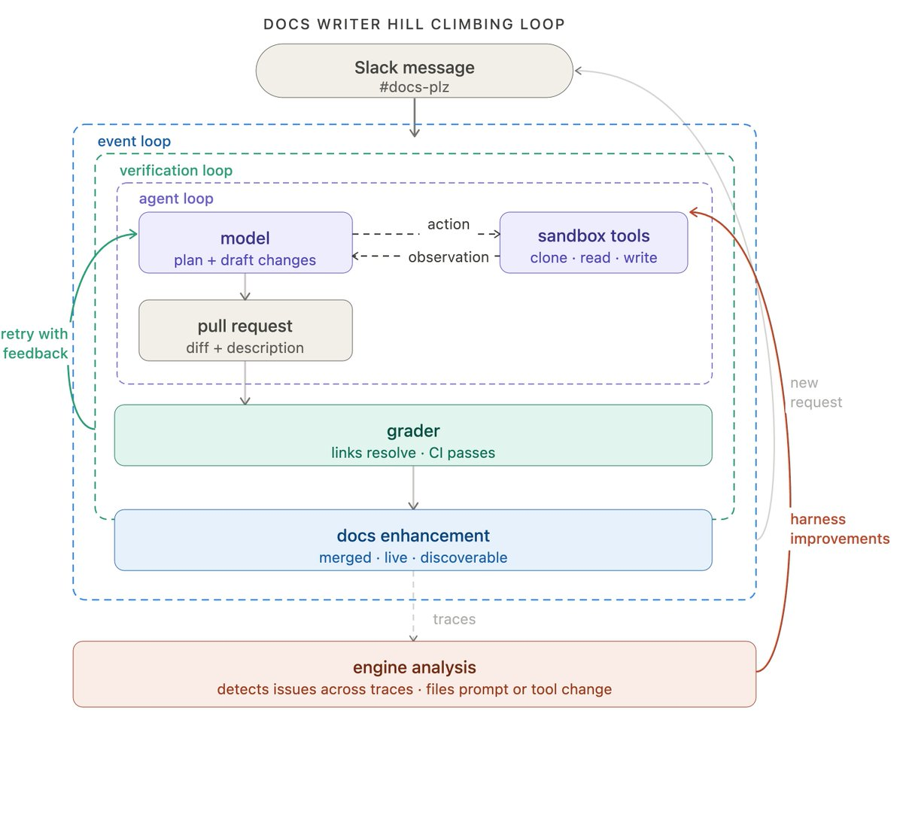
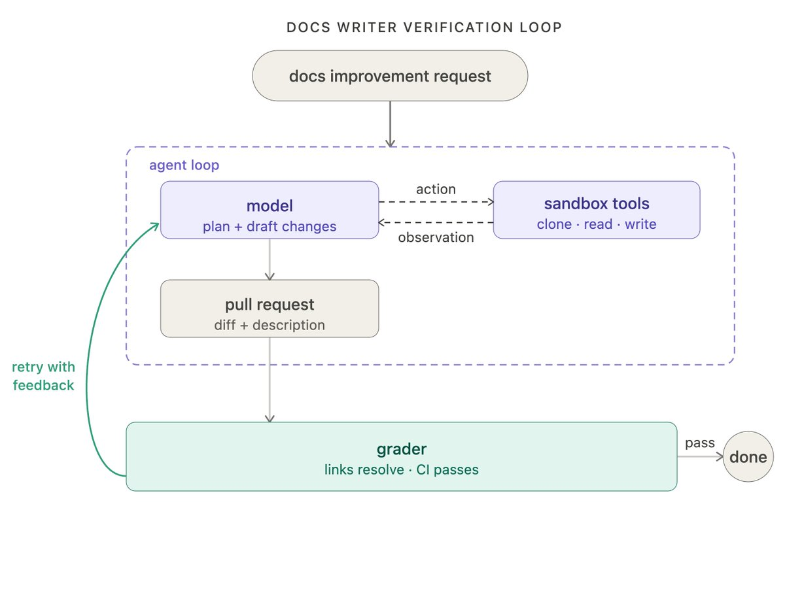
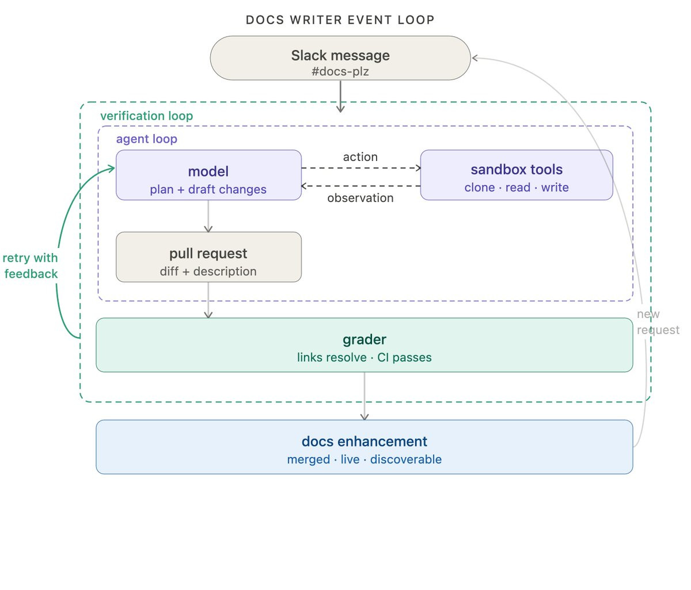
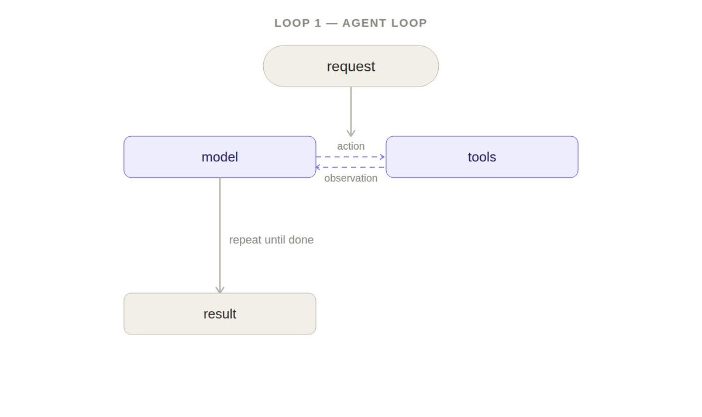
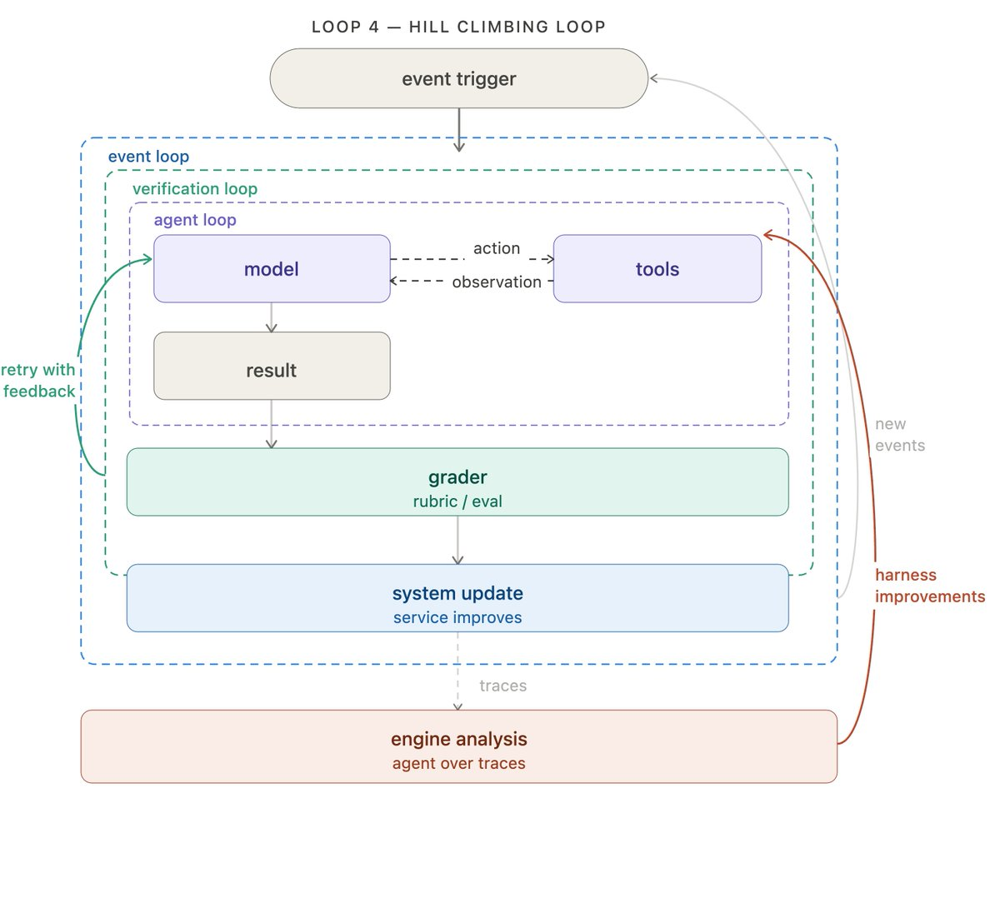

The Art of Loop Engineering
LangChain 的 4 层循环栈 · 从单循环到持续进化的工程化方法
Sydney Runkle（LangChain 核心开发）把"loop engineering"从思想金句变成可落地的工程方法——4 层 loop 栈包裹 agent，每层解决一类问题，最外层甚至能自我进化。读完这一篇，你能直接照着 LangChain 的中间件搭一套能自我改进的 agent 系统。

导言
loop 不再是一句金句
6 月 7 号，Peter Steinberger（@steipete） 在 X 上扔下一句：
"Stop prompting. Start designing the loop that runs the agent."
——别再提示 agent 了。你应该设计让 agent 自己跑起来的 loop。
一句话，6.39M 浏览。那天起，"loop" 这个词从程序员嘴里的 for-while 变成了产品经理嘴里的"agent 自动化方法论"。那篇文章 我们已经写过，steipete 讲的是"为什么"——人要从循环里撤出来，让 agent 自己跑。
9 天后，Sydney Runkle（@sydneyrunkle，LangChain 核心开发） 在 X 上发了一篇更长的文章：The Art of Loop Engineering。她在 LangChain 的视角把"loop"具体拆成了 4 层可落地的工程栈。
两篇对照读刚好：steipete 给了"为什么"，Sydney 给了"怎么做"。这一篇就是后者的解读——4 层 loop 栈怎么搭、每层用什么 LangChain 原生工具、代价是什么、什么时候需要人审。
4 层 loop 从内到外：Agent 循环 → 验证循环 → 事件驱动循环 → 爬山循环。前 3 层自动化"做事"，第 4 层自动化"改进"。人在每一层都有自然的接入点。
铺垫
swyx 的 "loopcraft"：4 层栈的思想来源
Sydney 在文章一开头就引用了 swyx（AI Engineer Summit 创始人）最近的一篇："loopcraft: the art of stacking loops"。
swyx 的核心观点是：loop 是可以堆叠的。最基础的 loop 是 LLM 调工具（Loop 1），但你可以在外面再包 loop——包一层做验证（Loop 2），再包一层接生态（Loop 3），再包一层让它自我改进（Loop 4）。每包一层，agent 系统的"做事的种类"就多一类。
Sydney 的贡献是把 swyx 的思想在 LangChain 框架里具象化。每一层对应一个或一组 LangChain 原生组件：
- Loop 1 →
create_agent - Loop 2 →
RubricMiddleware/after_agenthook - Loop 3 →
LangSmith Deployment/Fleet channels - Loop 4 →
LangSmith Engine
所以这一篇不只是 Sydney 个人观点——它是 swyx 思想 + LangChain 工程 的组合。如果你已经在用 LangChain，下面 4 层直接照着装；如果你在用别的框架（如 LangGraph、CrewAI、AutoGen），核心思想一样，只是组件名不同。
Sydney 在文章结尾提到：Steipete、Boris (PowerVee)、Andrej (Karpathy) 都独立得出过同一个结论——"agent 的潜力不在模型本身，在模型外面那一层层 loop"。这不是一个人的想法，是 2026 年 agent 工程界的共识。
swyx 的两层判断标准
swyx 在 "loopcraft" 里给了个简单判断：什么时候该加一层 loop？看两件事。
- 当前层的失败率能不能接受？ 如果 Loop 1 还在 50% 成功率徘徊，别上 Loop 3——你只是把烂结果自动化输出了。先把当前层做到 90%+ 再说。
- 失败的模式是不是固定的？ 如果失败模式飘忽不定（这次错在工具调用、那次错在 prompt 理解），加新层是治标不治本——先把失败归因分析做了，搞清楚是哪些类问题，再决定 Loop 2 / 3 解决哪类。
Sydney 的 4 层栈就是按这个判断标准排出来的：从最该稳定的（Loop 1）到最高阶的（Loop 4），一层一层叠。
总览
4 层 loop 栈长什么样
先看一个俯瞰图。后面会逐层展开——这是给 agent builder 看的全貌，给普通读者看的是"agent 周围能叠几层自动化"。
最基础的那一层：model 在 loop 里调工具
整个 agent 体系的最底层只有一句话：给 LLM 一个 context，让它在一个 loop 里调工具，直到任务做完。
这就是 Sydney 说的"the most fundamental loop"。看着简单，但它就是后面所有层的基础——后面三层都是包在它外面做事的循环。
在 LangChain 里，这一层的标准实现是 create_agent。选一个模型，插一组工具，你就拿到了一个能工作的 agent loop。Tools 才是让 agent 真正"在真实世界动手"的部分——没有工具的 LLM 只能说话，有了工具的 agent 才能改仓库、跑测试、开 PR、转账。
Sydney 用 LangChain 内部一个 docs agent 做贯穿全文的例子：
- agent 收到一条"改文档"的请求
- 模型规划 + 起草改动
- 调工具 clone 仓库、读文件、写文档、开 PR
这就是 Loop 1。后面三层，都是包在它外面解决不同问题的。
实操：create_agent 的最小骨架
对 agent builder 来说，create_agent 写出来大概是这样：
from langchain import create_agent from langchain.tools import clone_repo, read_file, write_file, open_pr agent = create_agent( model="claude-sonnet-4-6", tools=[clone_repo, read_file, write_file, open_pr], system_prompt="You improve internal documentation...", ) result = agent.invoke({"request": "add an example for X"})
三件事：选模型、给工具、写 system prompt。这一步 5 分钟能跑起来，但 80% 的人会卡在 tool 设计上——给太多工具 agent 选错，给太少它干不了。docs agent 的工具集就 4 个：clone / read / write / PR，刚好够、不多给。
tools 设计的 3 个原则
tools 是 Loop 1 的灵魂。设计原则 3 条：
- 一个工具只做一件事。别写
edit_file(path, content, mode)，写create_file/update_file/delete_file三个独立工具。工具粒度越细，model 选错的概率越低。 - tool 描述要写得跟 spec 一样。description 不是 "useful for editing files"，要写"把文件 path 替换为 content；path 必须存在；返回 success/fail"。description 是 model 选工具的依据，模糊描述 = 选错。
- 工具调用要幂等。同一工具同一参数调两次，状态应该一致（或者明确返回 "already done"）。非幂等的工具在 retry / 并发场景下会出大事。

做完不等于做对：加一层 grader 把关
Loop 1 能把活干完，但不一定干得对。当一致性比速度更重要时，最常见的做法是在外面包一层验证循环——加一个 grader 检查 agent 的输出，达不到标准就把结果和反馈回灌给 model 让它重写。
grader 本身可以是两种：
- deterministic：跑测试、检查链接是否 resolve、diff 是否只动了请求范围
- agentic：用另一个 LLM 当 judge（"这个文档写清楚了吗？给个 0-1 分"）
在 LangChain 里，RubricMiddleware 就专门管这个模式。或者你可以在 create_agent 上挂一个 after_agent hook，自己接 grader。
回到 docs agent 的例子，grader 在每次提交后跑测试，检查三件事：
- 所有链接 resolve
- 所有 CI check 通过
- diff 只动了用户实际请求的部分
这层 grader 把"链接死链 / CI 挂了 / 越界改文件"这类机械错误完全兜住——不需要人 review。
grader 设计的 3 个原则
实测下来，grader 写得好不好决定 Loop 2 是不是真的有价值。三个原则：
- 能 deterministic 就别 agentic。能跑测试解决的别让 LLM 当 judge——确定性 grader 速度快、成本低、可复现。agentic grader 只在"判断"类任务上用（这个文档讲清楚了吗？这个 commit message 表达清楚了吗？）。
- grader 失败要给具体反馈。回灌给 model 的反馈不能只是"fail"——必须是"第 3 行引用了不存在的图片"这种具体信号。模糊反馈只会让 model 再瞎试。
- grader 自己也要被测。grader 写错比没 grader 还糟——它会系统性地让好答案被判为差，把 model 往反方向推。grader 跑出 0 分时，人工 spot-check 一下结果样本。
加验证循环 = 每次多跑一次 grader = 延迟 + 成本上升。质量优先于速度的场景才值得。多数生产环境是，但"一次性 demo"不是。

从"我点一下跑一次"到"事件来了自己跑"
Loop 1 和 Loop 2 都是"被调用才跑"——你触发，它跑一次。生产环境里没人会一直点按钮。Loop 3 把 agent 接进你的生态：
事件驱动循环的核心是：一个事件触发 agent 跑。事件的来源可以是：
- cron schedule（定时）
- webhook（外部系统推）
- 新文档落地
- Slack 消息
- 邮件
Agent 不再是你手动触发的东西，而是永远在后台跑的一个组件。事件来了它就跑，没事就待着。
LangChain 这边，LangSmith Deployment 提供了 trigger 基础设施——支持 cron 调度和 webhook。一个很火的例子是 openclaw 里的 heartbeats：把 agent 变成永远在线、主动干活的助手。
docs agent 在 LangChain 内部是这样跑起来的：他们用 Fleet（LangChain 自己的 no-code agent 构建器），Fleet 的 channels + schedules 负责 event-driven 和 cron 触发。具体怎么用？
Slack 里有个 #docs-plz 频道，谁在里面发消息，docs agent 就被触发。事件 = Slack 消息，agent = 写文档，输出 = 开 PR。一条消息就完成"找问题 → 改文档 → 提 PR"全流程。
到这里你开始看到 loop 1+2+3 加起来的威力：agent 不再是 demo，是真在改公司代码库的一个常驻工。
channel 的 4 种类型
LangSmith Deployment / Fleet 里的 channel 是 Loop 3 的入口。最常见的 4 种：
- Slack channel：消息触发。docs agent 的 #docs-plz 就是这种。优点：人能看到 agent 在跑。缺点：消息量大会爆。
- Webhook：外部系统推。GitHub PR 开 / Stripe 收款 / Sentry 报警过来都能触发。优点：响应式，事件来了就动。缺点：要写 webhook handler。
- Cron schedule：定时跑。每天早上 9 点拉昨天未解决的 issue、每周一拉上周 metrics。优点：稳定可预期。缺点：实时性差。
- Heartbeats（openclaw 风格）：agent 自己按固定间隔心跳，没事也跑一次。优点：把"被动响应"变成"主动巡查"。缺点：成本最高（没事也烧 token）。
选哪种取决于你想要的"响应模型"：事件来了才动选 webhook；周期性整理选 cron；团队协作 + 看到 agent 干啥选 Slack；agent 主动发现问题选 heartbeats。

让 agent 改自己：自动化的尽头是自动化改进
前 3 层 loop 自动化"做工作"。第 4 层（也是 Sydney 强调"arguably most important"）自动化"做改进"。
每次 agent 跑都会留下一条 trace——记录 model 做了啥、调了哪些工具、grader 给什么分。这些 trace 里藏着大量信号：什么 prompt 起作用、什么 tool 常失败、什么场景 grader 一直给低分。
爬山循环做的事：
- 跑一批 agent
- 收集全部 trace
- 跑一个分析 agent 读这些 trace
- 分析 agent 改写 harness（prompt / tool / grader 的配置）
- 下一轮 agent 跑在新 harness 上
在 LangChain 里，LangSmith Engine 就是这个分析 agent。
回到 docs agent：他们跑 Engine 去分析所有 docs agent 的 trace，检测有没有共性问题。当多条 trace 都指向同一个 prompt 或 tool 出了 bug，Engine 会自动开一个 issue，要求改这个 prompt 或 tool。
注意箭头方向：第 4 层 loop 跑完一圈，不是回到最顶层再跑一次，而是穿进去改第 1 / 2 / 3 层。每一轮外层循环让内层循环更有效。这才是"自我进化"的真正形态——不是 agent 变聪明，是 agent 周围那套 harness 在持续优化。
前 3 层优化是起步
改 prompt / 改 tool / 改 grader 是最直接能优化的。但 Sydney 提了一个前瞻：
Looking forward: prompt and tool configuration are the most simple things to improve, but they're not the only options. For teams running open-weight models, the hill climbing loop can feed into RL fine-tuning, using trace or eval outcomes as training signal to improve the model itself. Auxiliary context like memory and retrieved skills can be improved the same way. The loop is the pattern; what it optimizes is up to you.
翻译一下：
- open-weight 模型：第 4 层 loop 可以喂到 RL fine-tuning，用 trace / eval 结果当训练信号，连 model 本身都在变
- memory / retrieved skills：外挂的 context 也能用同模式优化
loop 是范式，具体优化什么是你的选择。
Engine 改 harness 的最少条件
Loop 4 是 4 层里最容易跑空的——很多团队上了 Engine，发现它改出来的 prompt 越改越差。原因通常不是 Engine 不行，是trace 流水线不合格。Engine 改 harness 至少需要 3 个东西：
- 稳定的 trace 记录。每次 agent 跑的 prompt、tool call、grader 分数、最终输出都要落库。没有 trace，Engine 拿不到信号，输出就是瞎猜。
- 明确的优化目标。Engine 不知道你想优化什么——是 grader 通过率？是 tool call 次数？是 token 成本？目标越具体，Engine 改的越准。模糊目标 = 噪声改进。
- 改 harness 后的回测机制。Engine 改完 prompt / tool 配置，必须能在旧 trace 上重跑一遍看分有没有涨。没有回测，Engine 改完你不知道是变好了还是变差了。
三件齐了，Loop 4 才有意义。少一件，Engine 跑出来是噪声，建议先别上。

人在环上
自动化 ≠ 移除人
Sydney 在 4 层 loop 之后，专门加了一节讲 human oversight。重点不是"在不在场"——重点是"在哪些点自然需要人"。
她的原话：
An automated grader can check whether links resolve; it takes a human to notice the framing is wrong for the audience.
自动 grader 能查链接死没死，但判断文风是不是对的，只有人能干。这种判断——从 context、经验、品味里长出来的——就是人审存在的理由。
4 层 loop 的天然人审点
Sydney 给了 4 个具体点：
-
1AGENT LOOPsensitive tool calls 之前，必须 human input。比如转账、动数据库、改权限——这些不能 agent 自主决定。
-
2VERIFICATION LOOPsensitive workflow 的 grader 由人当。比如金融合规、医疗建议——LLM 当 judge 不够，必须人审。
-
3APPLICATION LOOP输出给终端用户之前人审。对外的内容、有品牌风险的、客户能看到的，agent 跑完人过一遍。
-
4HILL CLIMBING LOOPharness 改进上线前人审。Engine 改出来的 prompt / tool 配置不能直接生效，必须人确认。
Sydney 最后强调：LangChain 把 "human in the loop" 作为 first-class primitive。不是"如果你想加可以加"，是"这是设计的一部分"。

4 LOOPS · ONE TABLE

4 层 loop 一张表看全
| # | 中文名 | 英文名 | 做什么 | LangChain 原生工具 | 代价 |
|---|---|---|---|---|---|
| 1 | 代理人循环 | Agent loop | model + tools 在 loop 里跑到任务完成 | create_agent |
每跑一次 = 一次完整 LLM 调用链 |
| 2 | 验证循环 | Verification loop | agent 跑完，grader 打分；不达标回灌重写 | RubricMiddleware / after_agent hook |
每次多跑 grader = 延迟 + 成本 ↑ |
| 3 | 事件驱动循环 | Event-driven loop | cron / webhook / Slack 消息触发 agent 跑，输出落到真实系统 | LangSmith Deployment / Fleet channels |
agent 永远在后台 = 资源 + 监控成本 |
| 4 | 爬山循环 | Hill climbing loop | trace → 分析 agent → 改 harness → 内层变强 | LangSmith Engine |
需要稳定 trace 流水线 + 改 harness 的部署节奏 |
总结
写在最后：重点该转向 3 和 4
Sydney 的结尾很直接：
We've been thinking about loops 1 and 2 for a while. But focus should pivot to loops 3 and 4 where value compounds by embedding agents into your ecosystem that continuously improve in response to your criteria.
翻译：loop 1 和 2 我们已经想了很久。真正值钱的是 3 和 4——把 agent 嵌进你的生态，让它按你的标准持续变好。
她还引了 Satya（Microsoft CEO）的话：
Companies that build learning loops early, where human judgment and token capital compound together, will build an advantage that's hard to replicate.
企业级视角：学习循环跑得早就赢。人的判断力 + token 资本一起复合增长，是别人抄不走的护城河。
给读者的 3 件事
读完这一篇，你能立刻做的 3 件事：
- 先确定你的痛点在哪一层。loop 不是越叠越有用——Loop 1 都不稳，就别急着上 Loop 3。绝大多数生产事故出在 Loop 1（工具不对、prompt 没写好、grader 缺失）。
- Loop 2 的 grader 写好 = ROI 最高的一步。一个能跑测试 + 查链接 + 看 diff scope 的 grader，能干掉 80% 的机械错误。
- Loop 4 别追太早。爬山循环需要稳定的 trace 流水线 + 改 harness 的部署节奏。量没到那个规模，Engine 跑出来的"改进"很多是噪声。先把 Loop 1+2 跑到 95% 通过率，再考虑 Loop 3+4。

和 steipete 那篇 6.39M 金句对照读，这一篇把"写 loop"从口号变成了"装 loop"。LangChain 的 create_agent、RubricMiddleware、LangSmith Deployment、Engine 是 4 层对应的现成组件——你要做的是决定要不要按这个顺序叠上去，以及每一层上多少人审。
什么时候该上哪一层：决策树
如果你读完还不确定从哪一层开始，按这个顺序问自己：
- "我的 agent 有没有工具调用？" 没有 → 上 Loop 1（
create_agent）。有但成功率 < 70% → 回到 Loop 1 调工具和 prompt，别急着叠。 - "agent 跑出来经常错但又说不清错在哪？" 是 → 上 Loop 2。deterministic grader 先上（跑测试、查链接），agentic grader 视情况。
- "我想让 agent 不用我点就自己跑？" 是 → 上 Loop 3。从最稳的 channel 开始（cron 跑日报 → Slack 消息触发 → webhook 响应）。
- "我的 trace 数据齐 + 目标明确 + 已经有回测机制？" 三件齐 → 可以试 Loop 4。少一件 → 别上，先补基础设施。
4 层是堆叠，不是替代。每一层都解决上一层的具体问题，按需叠加，没有"必须全装"这种事。多数团队做到 Loop 1+2 就能解决 80% 的场景。

SOURCES
参考
-
ORIGINAL · X LONG-FORM ARTICLE
The Art of Loop Engineering · Sydney Runkle (@sydneyrunkle) · 2026/06/16 · 215.6K 浏览
https://x.com/sydneyrunkle/status/2066928783534289358 -
SISTER PIECE · 本站 steipete 那篇
Loop Engineering · 从提示 agent 到设计提示 agent 的循环
2026-06-09-loop-engineering.html（6.39M 浏览、思想缘起） -
KEY CONCEPT
swyx · "loopcraft: the art of stacking loops"（被 Sydney 引用作为 4 层栈的思想来源）
create_agent / RubricMiddleware / LangSmith Deployment / Engine / Fleet）保留英文原貌；中文版为意译，便于理解。loop 不是越叠越有用——先确认你的痛点在哪一层，再决定叠不叠。